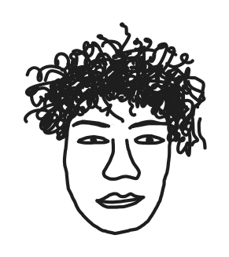

I like to build fun little projects, mostly in Python. I am 22, and I work at Crawl4AI, an open source web crawling python library. When I am not coding, I play games, make music, watch football and beatbox.
HypeStream decouples the hype engine from real-world trends. It uses a 3 tiered approach to detect trends and hydrate those trends by using Crawl4AI to scrape the open web around any topic. It micro-chunks what it finds into card-sized signals, and streams them into a social-media-grade infinite feed - synthetic hype, on demand, for whatever you actually care about.
Real-time crowd congestion detection on a Jetson Nano. It switches between YOLOv5 head detection and CSRNet density estimation depending on how packed the scene is, and runs on the edge via TensorRT.
A cross browser extension that lets you jump to any site with a short alias. It allows you to search within popular websites, run powerful shortcuts to open multiple websites at once and do wildcard matching. It hooks into the omnibox, and syncs your aliases across machines.
Records a beatbox phrase in the browser, splits it into individual hits, classifies each one as kick, snare, or hi-hat with a custom-trained model, and plays the pattern back with electronic drum sounds.
Draw your music. A browser-based loop creator where you sketch freehand strokes on a MIDI grid and hear them play back. The row sets the pitch or drum, the stroke sets the timing, and the canvas is your score.
Playing video games with your brain. It reads EEG signals off an Emotiv headset and turns them into game input.
I help maintain Crawl4AI, one of the most popular web crawling Python libraries on GitHub. I root-cause and fix bugs, like cleaning up leaked Playwright drivers and chaining the Docker egress proxy through upstream proxies, and I ship requested features, such as PDF scraping through the Docker API, configurable LLM backoff, and a full website-to-API example. I also help build and test Crawl4AI Cloud, which we are launching soon.
Built a RAG pipeline over real estate PDFs using Tesseract OCR, the Google Embeddings API, and Weaviate. Ran 20,000+ properties through it to find matches within 3 to 5 km, and quantized the embeddings down to a quarter of the memory.
Wrote backend APIs in Flask and shipped LLM powered features on top of them, using RAG and structured outputs.
During my college years I was a key part of our Open Source Developer's community. We put on hackathons, talks, and events for over 800+ students.
I won OSDHACK'23 and Codejam v3, and placed top 5 at BITBOX 3.0.
Day to day I write Python, JavaScript, and TypeScript, with some C and C++ when the job calls for it. Lately I have been dabbling with technologies such as FastAPI, Playwright, Docker, Redis, and PyTorch, and I keep building browser extensions for fun.
Want to build something? Find me on GitHub.